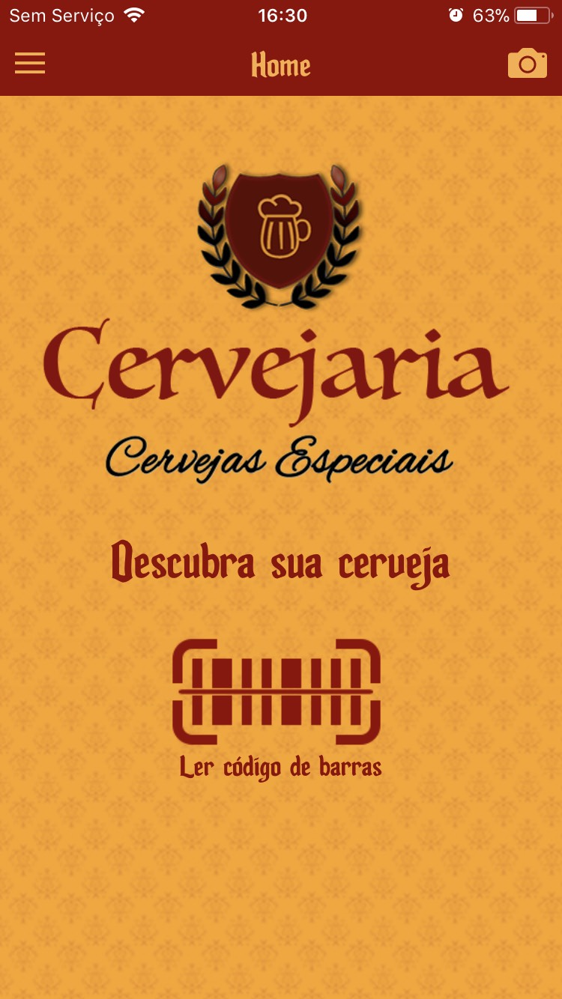
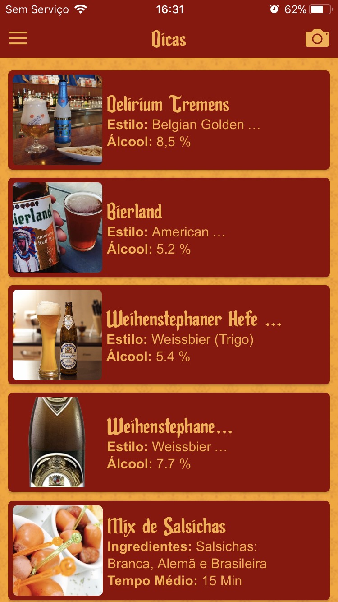
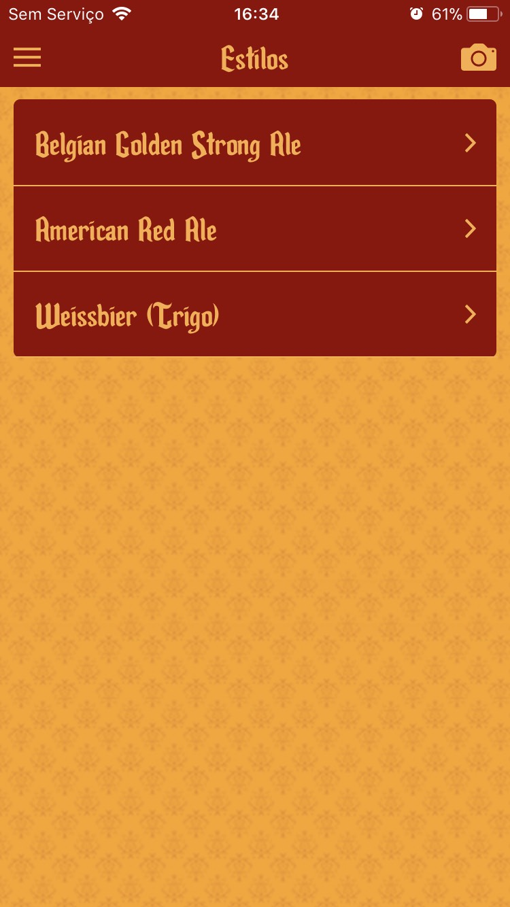
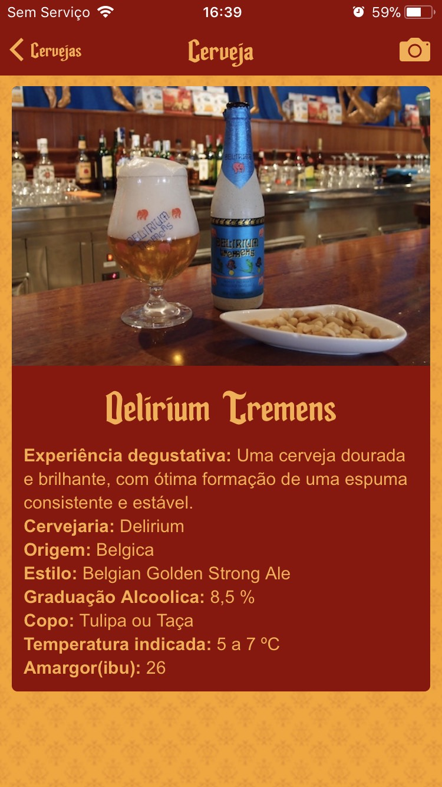
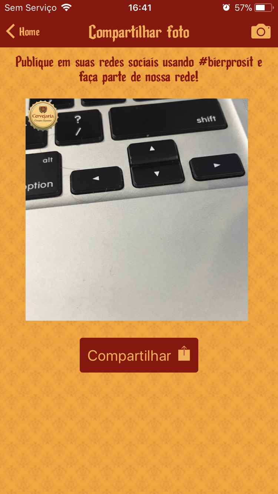
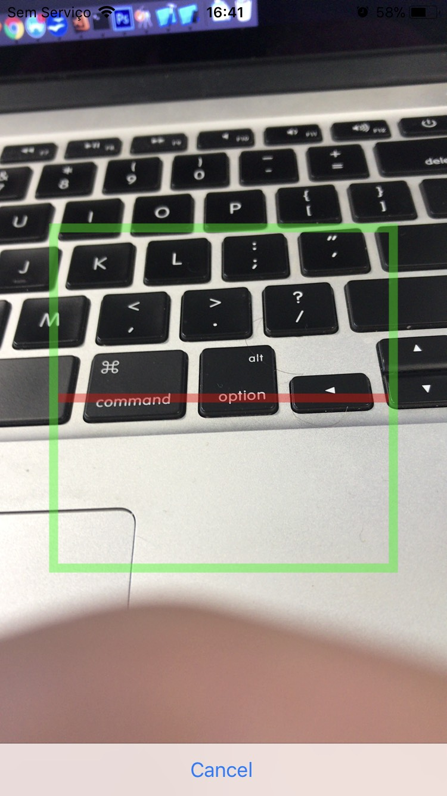

App Cervejarias


Tela inicial do app
Aqui você consegue inserir a logo da cervejaria e alguma ação abaixo da logo, no caso deste projeto a ação foi ler um código de barras para retornar as informações da cerveja. O código está previamente cadastrado em um painel, onde você consegue gerenciar todas as cervejas que vão aparecer no app.
Menu lateral
Ele foi desenhado para o usuário conseguir acessar qualquer parte do app em qualquer página principal. Como as páginas que contém as listas de Cervejas, Petiscos, Dicas e além das listas também tem um item que retorna a home. E acima dos itens foi inserida a logo da empresa para melhorar a usabilidade do menu, inserindo um cabeçalho ao menu.

Dicas
Uma página bem simples no visual e bem complexo por baixo. A tela executa uma busca de cervejas e petiscos que estão cadastrados como dica no banco de dados e os indexa em ordem, separando as cervejas dos petiscos. Cada item da lista leva diretamente ao seu referente detalhamento.

Estilos
Esta página é bem semelhante a outras do app, é uma simples lista. Porém existe um filtro específico em cada lista. Neste caso o filto são pelos estilos das cervejas disponíveis no banco de dados. Ao buscar as cervejas a página mostra em ordem alfabefica todos os estilos de cervejas disponíveis.
Cervejas
Página subsequente a pagina de estilos, selecionando seu estilo favorito o app vai fazer uma nova busca trazendo apenas os rótulos de cervejas referentes ao estilo escolhido, possibilitando o usuário a escolher a cerveja desejada.

Cerveja
Resultado de toda jornada de cliques em busca da cerveja perfeita, esta tela mostra os detalhes da cerveja escolhida, tal como foto, descrição, cervejaria, origem, estilo, graduação alcoolica, copo, temperatura ideal e amargor. O cliente do projeto inicial escolheu não mostrar preço da cerveja, mas isso pode ser configurado facilmente, possibilitando o app funcionar como um catálogo para pedidos, que pode ser usado por vendedores da cervejaria em questão.
Petiscos
Novamente uma lista simples, tal como a lista de estilos e cervejas, esta lista mostra todos os petiscos disponíveis na casa. Uma lista um pouco mais direta, não tem muitos filtros, tudo que está disponível no banco de dados como petiscos vai aparecer nesta lista para o usuário escolher o que mais lhe agrada.
Petisco
Tela subsequente a lista anterior, mostra também detalhes do petisco, porém com pouco menos detalhes se comparar a tela de cerveja. Está tela mostra apenas o tempo médio de preparo e os ingredientes.
Erro
Todas as requisições ao banco de dados dependem de internet, logo, caso o usuário esteja sem conexão ou até com uma conexão muito lenta, o retorno precisa ser amigável. Com isso todas as requisições acima possuem este erro, no caso a imagem relata o erro de buscar uma cerveja, mas cada tela tem seu erro específico para deixar bem claro ao usuário o que está acontecendo.

Foto e compartilhamento
Esta tela agrega muito valor ao negócio do estabelecimento, ao tirar uma foto com o app e confirmar o app inclui na foto a logo do estabelecimento, assim fornecendo uma divulgação da sua marca nas redes sociais do cliente final que está utilizando o app. A foto tirada pode ser compartilhada em qualquer rede social, como Instagram, Facebook, WhatsApp...

Comments